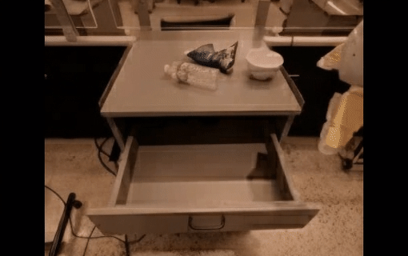
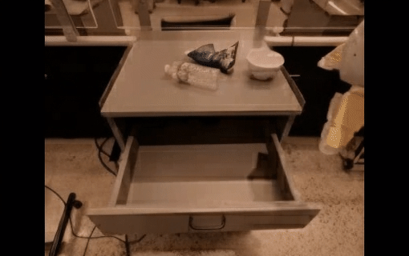


 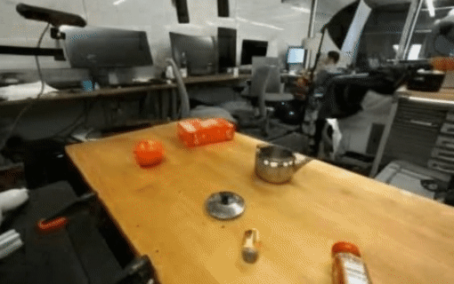
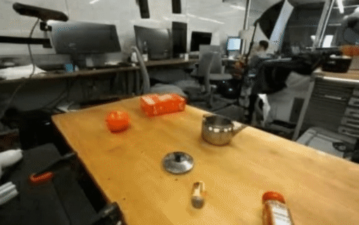
 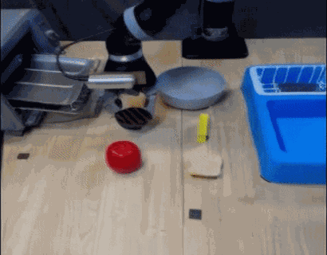
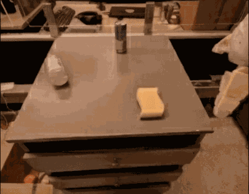
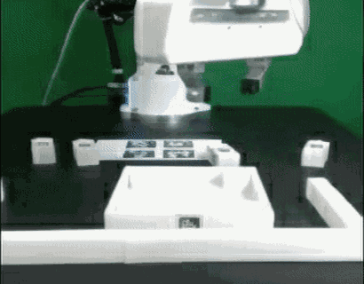
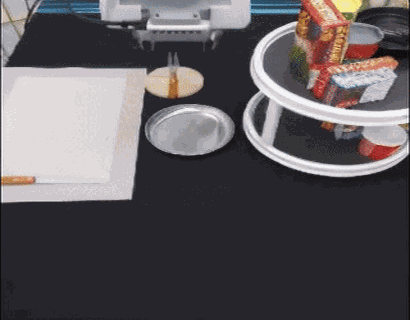
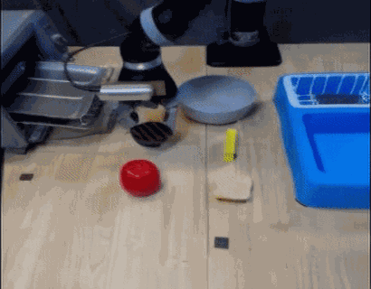
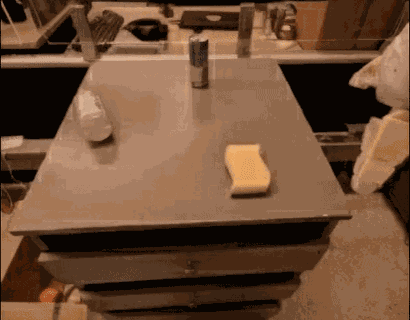
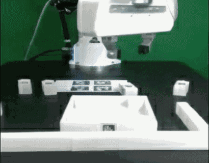
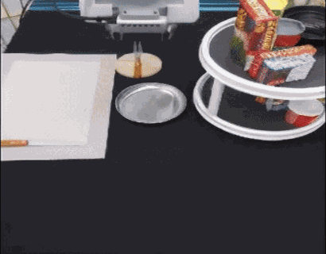
 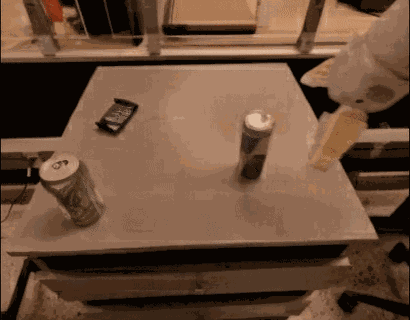
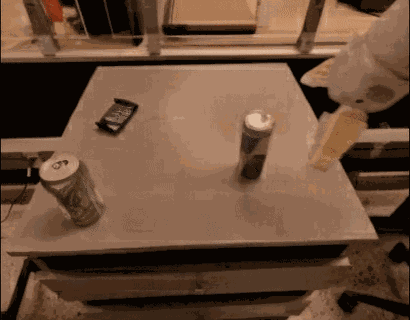


5 Sep 2025
2025年9月5日
Unitree Embodied AI R&D Team
宇树科技具身智能研发团队
UnifoLM-WMA-0 is Unitree‘s first open-source world-model–action architecture spanning multiple types of robotic embodiments, designed specifically for general-purpose robot learning. Its core component is a world-model capable of understanding the physical interactions between robots and their environments. This world-model provides two key functions: (a) Simulation Engine – operates as an interactive simulator to generate synthetic data for robot learning; (b) Policy Enhancement – connects with an action head and, by predicting future interaction processes with the world-model, further optimizes decision-making performance.
UnifoLM-WMA-0 是宇树科技首个跨多类机器人本体的开源世界模型动作架构，专为通用机器人学习而设计。其核心成分在于一个可以理解机器人与环境交互物理规律的世界模型。该世界模型具备两大核心功能：（1）仿真引擎，作为交互式仿真器运行，为机器人学习生成合成数据;（2）策略增强，可与一个动作头进行对接，通过预测未来与物理世界的交互过程，进一步优化决策性能。
Fine-tuning the Video Generation Model: First, we fine-tune the video generation model on the Open-X dataset to adapt its generative capability to robotic operation scenarios. The model takes images and text instructions as input and generates future action videos corresponding to the text instructions. The generation results of the fine-tuned model on the test set are as follows:
微调视频生成模型： 首先，我们在 Open-X 数据集上微调视频生成模型，将其生成能力适配至机器人作业场景。 模型接收图像及文本指令，生成与文本指令对应的未来动作视频。微调模型在测试集上的生成效果如下：
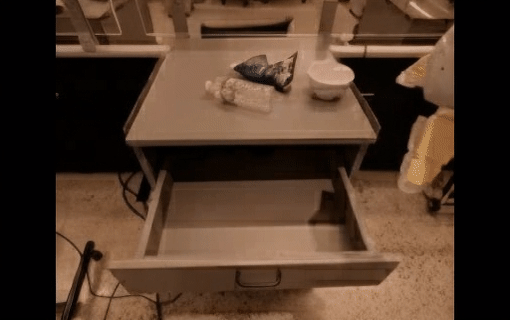
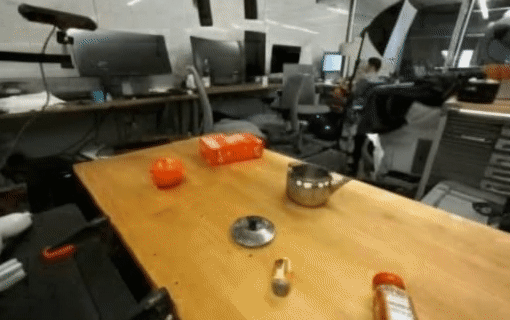
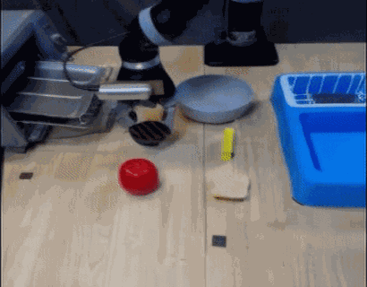
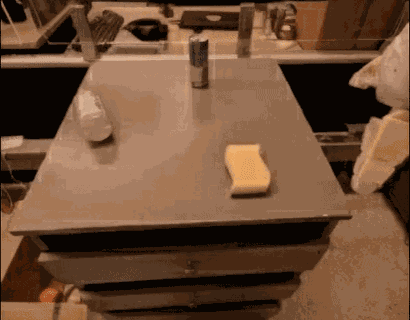
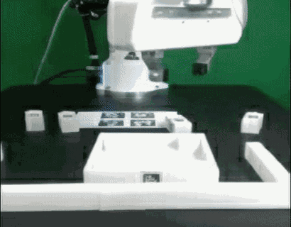
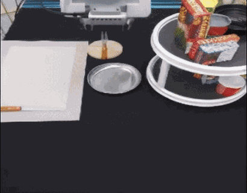
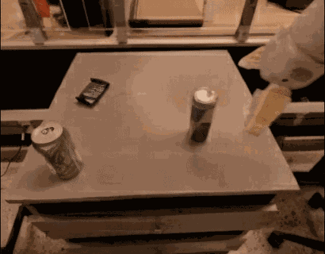
UnifoLM-WMA-0 Architecture: We propose a world-model–embedded policy architecture. This framework enables the world model to operate in two modes: (1) Decision-Making Mode: Provides predictive information to assist the policy in generating actions. (2) Simulation Mode: Generates high-fidelity environmental feedback based on robot actions. The complete system architecture is shown as follows:
UnifoLM-WMA-0 架构：我们提出了一种世界模型嵌入式策略架构。该方案使世界模型支持双模式运行：(1) 决策模式：提供预测信息辅助策略生成动作；(2) 仿真模式：基于机器人动作生成高保真环境反馈。完整系统架构如下所示：